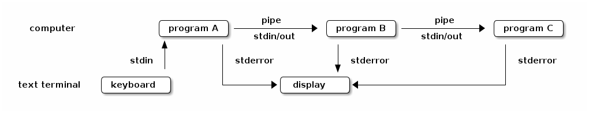
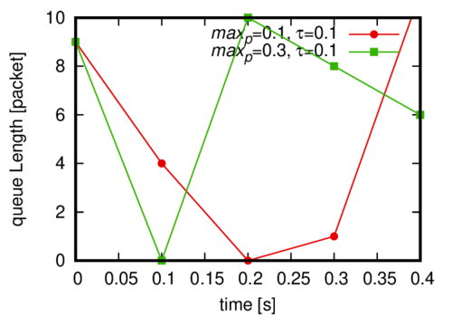

Unixの哲学 - pipe redirect
Table of Contents
1 Unix のシステム連携
unixの特徴の一つである 「小さな道具を連携する」 ことを実現するためのツー ルに 「pipe」「redirect」がある.
1.1 pipe
usage
| がパイプを意味する.
| の左側のプログラムの標準出力が、右側のプログラムの標準入力となる.
> ls 1_puts.rb 2_name.rb 3_array.rb 4_method.rb tidy.rb > ls | grep "method" 4_method.rb
上記の例では, ls コマンドの出力が grep コマンドの入力となっている.
meaning
pipe という英単語は、OALD7 では以下のように定義されている.
pipe
★ pipe / [UK] pa_p; NAmE [US] / noun, verb
■ noun
1 [C, U] a tube through which liquids and gases can flow: hot and cold water pipes ◇ lead / plastic pipes ◇ a leaking gas pipe ◇ Copper pipe is sold in lengths. ◇ a burst pipe —see also drainpipe, exhaust, waste pipe, windpipe
2 [C] a narrow tube with a bowl at one end, used for smoking tobacco: to smoke a pipe ◇ He puffed on his pipe. ◇ pipe tobacco
3 [C] a musical instrument in the shape of a tube, played by blowing —see also pan pipes
4 [C] any of the tubes from which sound is produced in an organ
5 pipes [pl.] = bagpipes
■ verb
1 [vn] to send water, gas, oil, etc. through a pipe from one place to another: to pipe oil across the desert ◇ Water is piped from the reservoir to the city.
2 [vn] [usually passive] to send sounds or signals through a wire or cable from one place to another: The speech was piped over a public address system.
3 to play music on a pipe or the bagpipes, especially to welcome sb who has arrived: [vn] Passengers were piped aboard ship at the start of the cruise. ◇ [v] a prize for piping and drumming
4 to speak or sing in a high voice or with a high sound: [v] Outside a robin piped. [also v speech]
5 [vn] to decorate food, especially a cake, with thin lines of icing, etc. by squeezing it out of a special bag or tube: The cake had Happy Birthday piped on it.
[ PHRASAL VERBS ]
_pipe _down
(informal) used especially in orders, to tell sb to stop talking or to be less noisy
_pipe _up (with sth)
(informal) to begin to speak:
The person next to me piped up with a silly comment. ◇ [+ speech] I know the answer, piped up a voice at the back of the room.
▼ WORD ORIGIN
pipe
Old English p_pe musical tube, p_pian play a pipe, of Germanic origin; related to Dutch pijp and German Pfeife, based on Latin pipare to peep, chirp, reinforced in Middle English by Old French piper to chirp, squeak.
また、オンライン辞書グループ 「通信用語の基礎知識」1 では以下のように説明されている.
パイプ 【電算用語:応用情報編】
分類: コンピュータ > ソフト > 処理方法 > タスク・スレッド
読み: パイプ
外語: pipe
発音: p_ip
品詞: 名詞
◇あるタスクの出力と, 別のタスクの入力を接続する機能.
◇MS-DOS はシングルタスク OS であるため, 一旦テンポラリファイルに出力され, 次のタスクの入力時 に読み込ませている.
◇UNIX では, MS-DOS と違い入力と出力が並行して行なわれる. バッファリングの分だけ遅延があるが, 結果が即時に処理される. これは, 単機能のモジュール化という UNIX の考え方に適った設計といえる.
※パイプ
% cat infile | sort | more
Wikipedhia にも詳細な解説がある. https://ja.wikipedia.org/wiki/%E3%83%91%E3%82%A4%E3%83%97_(%E3%82%B3%E3%83%B3%E3%83%94%E3%83%A5%E3%83%BC%E3%82%BF)
これらの情報から、 私は "pipe" という名称は以下のような意味から命名されていると推測する.
[名詞]
1 [C, U] a tube through which liquids and gases can flow: hot and cold water pipes ◇ lead / plastic pipes ◇ a leaking gas pipe ◇ Copper pipe is sold in lengths. ◇ a burst pipe —see also drainpipe, exhaust, waste pipe, windpipe
[動詞形]
1 [vn] to send water, gas, oil, etc. through a pipe from one place to another: to pipe oil across the desert ◇ Water is piped from the reservoir to the city.
2 [vn] [usually passive] to send sounds or signals through a wire or cable from one place to another: The speech was piped over a public address system.
コンピュータにおいて,複数のプログラムの入出力というリソースを運ぶための管という意と推測した. 以下の図のように,複数のプログラムの入出力を運ぶ役割をしているのが 「pipe」である.

1.2 redirect
usage
[command] > [path to file]
> cal November 2024 Su Mo Tu We Th Fr Sa 1 2 3 4 5 6 7 8 9 10 11 12 13 14 15 16 17 18 19 20 21 22 23 24 25 26 27 28 29 30 > cal > cal.txt > cat cal.txt November 2024 Su Mo Tu We Th Fr Sa 1 2 3 4 5 6 7 8 9 10 11 12 13 14 15 16 17 18 19 20 21 22 23 24 25 26 27 28 29 30 > cal > cal.txt > cal -m 12 >>cal.txt > cat cal.txt November 2024 Su Mo Tu We Th Fr Sa 1 2 3 4 5 6 7 8 9 10 11 12 13 14 15 16 17 18 19 20 21 22 23 24 25 26 27 28 29 30 December 2024 Su Mo Tu We Th Fr Sa 1 2 3 4 5 6 7 8 9 10 11 12 13 14 15 16 17 18 19 20 21 22 23 24 25 26 27 28 29 30 31
>書き出し. 元の内容は消去される.>>追記
meaning
redirect という英単語は、OALD7 では以下のように定義されている.
re_dir_ect
re_dir_ect / [UK] ri_d__rekt; NAmE [US] ; [UK] -d-; NAmE ; [UK] -da_-; NAmE / verb [vn]
redirect sth (to sth)
1 to use sth, for example money, in a different way or for a different purpose: Resources are being redirected to this important new project.
2 to send sth to a different address or in a different direction:
Inquiries on this matter are being redirected to the press office. ◇ Make sure you get your mail redirected to your new address.
→ re_dir_ec_tion noun [sing., U]:
a sudden redirection of economic policy ◇ the redirection of mail
また、オンライン辞書グループ 「通信用語の基礎知識」1 では以下のように説明されている.
分類: コンピュータ > 制御・管理 読み: リダイレクト 外語: redirect 発音: rid_r_kt | -dai- 品詞: さ変名詞
◇入出力先を他のものに切り替える機能. ◇ファイルのリダイレクトの場合, あるタスクの出力をファイル化する, または逆に, ファイルの内容を タスクへの入力とする. UNIX のシェルでは, "<", ">", ">>", "&>" などの記号を使う. ◇HTTP の場合, Location ヘッダを使って HTTP アクセスを任意の URL に飛ばす.
※ファイルのリダイレクトの例 リダイレクト "<"(入力) ">"(出力) % sort < infile > outfile
コンピュータ用語としての 「redirect」は、OALDにおける 2 の意味, 「異る アドレスまたは方向に何かを送る」から来ていると考えられる.
2 to send sth to a different address or in a different direction:
2 グラフのプロット
本稿は, Debian GNU/linux 上で記述しているため maple が動作しないため, gnuplot で代用するものとする.
gnuplot install
以下のコマンドで gnuplot の install を行うことができる.
> sudo apt install gnuplot gnuplot-doc gnuplot-qt
以下から作成できるグラフの例を見ることができる.
> cd /usr/share/doc/gnuplot/examples > gnuplot all.dem
xdoplot & psfix-gnuplot install
xdoplot および psfix-gnuplot を install .
- xdoplot
https://www.lsnl.jp/~ohsaki/software/xdoplot/
- psfix-gnuplot
https://www.lsnl.jp/~ohsaki/software/perl/psfix-gnuplot
> wget https://www.lsnl.jp/~ohsaki/software/xdoplot/xdoplot > wget https://www.lsnl.jp/~ohsaki/software/perl/psfix-gnuplot > sudo install -m 755 xdoplot psfix-gnuplot /usr/local/bin
plot やり方
> xdoplot -te file.res | psfix-gnuplot >file.eps > gv file.eps
以下のように, pipe と redirect を使うと作業の効率化を行うことができる.
> ruby make_resource.rb >sample.res > cat sample.res #include "time-queue.def" option: set xrange [0:.4] option: set yrange [0:10] show: 1, 3 name: maxp = 0.1, tau = 0.1 0.0 9 0.1 4 0.2 0 0.3 1 0.4 11 name: maxp = 0.2, tau = 0.1 0.0 9 0.1 0 0.2 1 0.3 10 0.4 8 name: maxp = 0.3, tau = 0.1 0.0 9 0.1 0 0.2 10 0.3 8 0.4 6 > xdoplot -te sample.res | psfix-gnuplot >sample.eps
以下が出力されるグラフである.

以下はリソースファイルを作成した ruby プログラム make_resource.rb である.
srand(10)
puts '#include "time-queue.def"'
puts 'option: set xrange [0:.4]'
puts 'option: set yrange [0:10]'
puts 'show: 1, 3'
puts "\n"
puts 'name: maxp = 0.1, tau = 0.1'
for i in 0..4 do
x=i
printf("0.%g\t%d\n", x,rand(12))
end
puts "\n"
puts 'name: maxp = 0.2, tau = 0.1'
for i in 0..4 do
x=i
printf("0.%g\t%d\n", x,rand(12))
end
puts "\n"
puts 'name: maxp = 0.3, tau = 0.1'
for i in 0..4 do
x=i
printf("0.%g\t%d\n", x,rand(12))
end